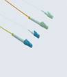
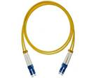
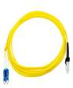
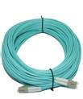
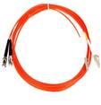

LC FIBER PATCH CORD

Item |
Single mode |
Multi mode |
|
Fiber diameter |
9/125um |
62.5/125um 50/125um |
|
Insertion loss |
PC＜0.3dB APC＜0.2dB |
PC＜0.3 dB |
|
Return loss |
PC＞45 dB APC＞60 dB |
PC＞25 dB |
|
Insert–pull test |
(1000 times) ＜0.3 dB |
||
Interchange |
＜0.2 dB |
||
Operation temperature |
-40℃ ~ +80℃ |
||
Anti-tensile force |
15kgf |
||